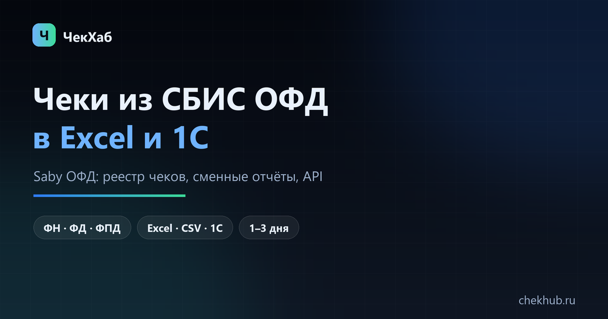

Как выгрузить чеки из СБИС ОФД в Excel и 1С: кабинет, отчёты, API
СБИС ОФД — отдельный кабинет оператора фискальных данных, и он не совпадает с тем экраном, где компания сдаёт отчётность. Ниже — где именно лежат чеки, какие отчёты кабинет отдаёт файлом, чем он ограничен и как довести данные до Excel и 1С так, чтобы строки не задвоились.

Реестр чеков — это документы, а не отчёт о продажах. Если нужны суммы по дням и сменам, берите один отчёт. Если нужны позиции товаров — другой путь. Смешать их без ключа ФН + ФД + ФПД и есть главная причина двойных строк.
Если разбираться некогда
от 1 500 ₽ за кассу за месяц; год и сеть считаем по количеству касс и месяцев. Срок 1–3 рабочих дня на небольшую сеть.
Гарантия: если ваш ОФД не отдаёт данные за нужный период — вернём предоплату.
Как выглядит результат: пример файла выгрузки (CSV, данные тестовые).
Два кабинета: чеки и отчётность — не одно и то же
Документы ККТ живут в кабинете оператора — ofd.sbis.ru. Это не тот же экран, где компания сдаёт отчётность и ведёт ЭДО, хотя вход обычно общий: если договор с ОФД есть, логин тот же, а раздел ОФД открывается из меню. Если сотрудник видит только отчёты, документы и задачи, а чеков нет — дело не в выгрузке, а в правах: доступ к ОФД выдаёт администратор аккаунта.
Про названия. СБИС переименован в Saby — в интерфейсе, документах и поддержке встречаются оба варианта, это одна и та же система. Поисковые запросы «СБИС ОФД» и «Saby ОФД» ведут в один кабинет, договоры и доступы при переименовании не менялись.
Второе, что проверяют до всякой выгрузки: на каком операторе стоит касса. Если фискальный накопитель обслуживается в Платформе ОФД, Такскоме или Первом ОФД, в Saby чеков не будет вообще. Номер оператора и срок действия ФН видно в карточке кассы в кабинете ОФД. Касса Эвотор? Тогда фискальные чеки — у оператора, а продажи и товары — в облаке производителя: разбор в статье о выгрузке с Эвотора.
Где в СБИС ОФД лежат чеки
Документы собраны в разделе с чеками — это реестр, где одна строка соответствует одному фискальному документу. Над списком всегда стоят фильтры, и порядок их настройки важнее, чем кажется:
- Период. Один запрос — обычно не больше месяца. Чем длиннее интервал, тем дольше кабинет формирует файл.
- Касса. Фильтр по заводскому номеру ККТ. Если точек несколько, без него в файл попадёт всё сразу и выгрузка станет бесполезной.
- Тип документа. Приход, возврат прихода, чек коррекции. Для сверки нужны все три: если смотреть только приходы, выручка «вырастет» на сумму возвратов.
- Смена. Нужна, когда бухгалтерия просит свести сменные отчёты с чеками внутри смены.
Какие отчёты кабинет отдаёт файлом
Файл из кабинета ОФД — это всегда отчёт, а не полный «сырой» документ. Практически доступны три вещи:
- Реестр чеков. По строке на документ: дата и время, номер ККТ, ФН, ФД, ФПД, сумма, признак расчёта, в части отчётов — ставка НДС.
- Сменные отчёты. Открытие и закрытие смены, выручка за смену, количество чеков. Именно их обычно просят приложить к отчёту.
- Свод по продажам. Агрегат по дням или кассам. Удобно для управленки, но сверять с ним фискальные суммы нельзя: возвраты и коррекции считаются иначе.
Чем ограничена выгрузка из кабинета
- Период. Месяц — типичный максимум. Год собирают из 12 файлов на каждую кассу и потом склеивают.
- Число строк. Большие отчёты кабинет режет на части или формирует с задержкой.
- Состав. Наименований товаров в реестре обычно нет — только суммы и реквизиты. Позиции забирают отдельно.
- Глубина. Фискальные документы хранятся у оператора не менее пяти лет, но доступность в кабинете зависит от договора и тарифа.
- Ручной труд. Сеть из десяти касс — это десять выгрузок в месяц, каждый раз с ожиданием отчёта. За год набегает больше сотни файлов, и склеивать их вручную никто не любит.
Выгрузка в Excel: пошагово
- Войдите в кабинет СБИС ОФД под аккаунтом, у которого есть доступ к чекам.
- Откройте раздел с чеками и выставьте период — начните с одного месяца, чтобы проверить результат на небольшом объёме.
- Укажите кассу по заводскому номеру. Несколько касс — несколько файлов.
- Выберите тип документов. Приходы и возвраты лучше выгружать раздельно: так видно, откуда взялся минус.
- Сформируйте отчёт и сохраните файл (Excel или CSV).
- Повторите для каждой кассы и каждого месяца. Файлы подписывайте по схеме «ККТ_ГГГГ-ММ» — через полгода это сэкономит часы.
- Откройте один файл и проверьте: кодировку, разделитель, формат даты и то, как записаны суммы.
Что ломается при открытии файла в Excel
Чаще портится не выгрузка, а её чтение:
- Суммы с запятой. Excel превращает их в даты. Импортируйте через «Данные → Из текста», а не двойным кликом по файлу.
- ФД и ФПД. Это длинные числа: Excel показывает 1,23E+15 и теряет последние цифры. Колонки заранее делайте текстовыми.
- Кириллица. CSV в ANSI-кодировке открывается «крякозябрами» — сохраняйте UTF-8.
- Часовой пояс. Время в файле может быть по кассе, а не по Москве. При сверке с 1С это даёт сдвиг на день у вечерних чеков.
Если нужны позиции товаров
Реестр отвечает на вопрос «сколько», но не «что». Состав чека — наименования, количество, цена — в кабинете ОФД либо не отдаётся вовсе, либо доступен в отдельном товарном отчёте, и это зависит от тарифа. Универсальный путь — API оператора: документы забирают частями вместе с предметами расчёта и складывают в таблицу по расписанию. Минусы ожидаемые: нужен доступ к API, ключ, учёт лимитов запросов и небольшой скрипт.
Если позиции нужны разово — например, для сверки закупок за квартал, — дешевле заказать выгрузку, чем разбирать десятки тысяч чеков руками. Подробнее: чеки с позициями.
СБИС ОФД и 1С: три способа
- Файл и ручная загрузка. Универсально и бесплатно, но каждый месяц повторяется вручную. Годится для одной-двух касс.
- Обмен через API и обработку. Скрипт забирает документы и раскладывает их в таблицу или файл обмена. Подходит, когда касс много и выгрузка нужна регулярно.
- Штатная интеграция. Если в конфигурации есть модуль обмена с ОФД или СБИС, настройка сводится к реквизитам доступа — но загрузится только то, что умеет модуль, а не всё, что есть в кабинете.
Что ломается чаще всего: не сопоставлены кассы по номерам ККТ, не совпадают ставки НДС, дубли при повторной загрузке того же файла, сдвиг даты из-за часового пояса. Общий разбор — в статье выгрузка чеков в 1С.
Как склеить месяцы без дублей
Ключ чека — три реквизита: номер фискального накопителя (ФН), номер документа (ФД) и фискальный признак (ФПД). Если склеивать по дате и сумме, два разных чека на одну сумму в одну минуту слипнутся, а повторная выгрузка месяца добавит копии. Порядок:
- В каждом файле добавьте колонку «источник»: ККТ и месяц.
- Соберите все строки в одну таблицу.
- Удалите дубли по ФН + ФД + ФПД, оставив первую запись.
- Сверьте по месяцам три цифры: количество чеков, сумма приходов, сумма возвратов.
- Проверьте дату последнего документа в каждом файле — обрезка периода видна именно там.
Если период больше месяца: выгрузка за месяц и выгрузка за год.
Что проверить перед передачей в бухгалтерию
- Количество чеков совпадает с кабинетом за тот же период.
- Суммы приходов и возвратов сходятся с отчётом ОФД до копейки.
- Нет пустого ФПД и обрезанных номеров ФД.
- Закрытые кассы попали в выгрузку отдельными файлами.
- Период начинается с 00:00 первого дня и заканчивается последней секундой последнего.
Частые вопросы
Где находится личный кабинет СБИС ОФД?
Кабинет оператора — ofd.sbis.ru, вход по аккаунту Saby (СБИС) с доступом к ОФД. Из общего кабинета раздел ОФД открывается в меню, если услуга подключена.
СБИС и Saby — это одно и то же?
Да. СБИС переименован в Saby: кабинет тот же, адрес ofd.sbis.ru, прежние доступы и договоры продолжают действовать.
Можно ли выгрузить чеки за год одним файлом?
Обычно нет: кабинет ограничивает период и число строк. Год собирают по месяцам — по каждому месяцу и каждой кассе свой файл — и склеивают по ФН + ФД + ФПД.
Почему в отчёте нет названий товаров?
Реестр чеков содержит суммы и реквизиты. Состав чека забирают через API оператора или в отдельном товарном отчёте, если он есть в тарифе.
Как проверить чек из выгрузки?
По трём реквизитам: ФН, ФД и ФПД. Строку чека можно разобрать на странице проверки чека по QR, а подлинность подтверждается в сервисе ФНС.
Сколько ОФД хранит чеки?
Фискальные документы хранятся у оператора не менее пяти лет. Глубина доступа в кабинете зависит от договора, за старые периоды данные запрашивают через API или поддержку.